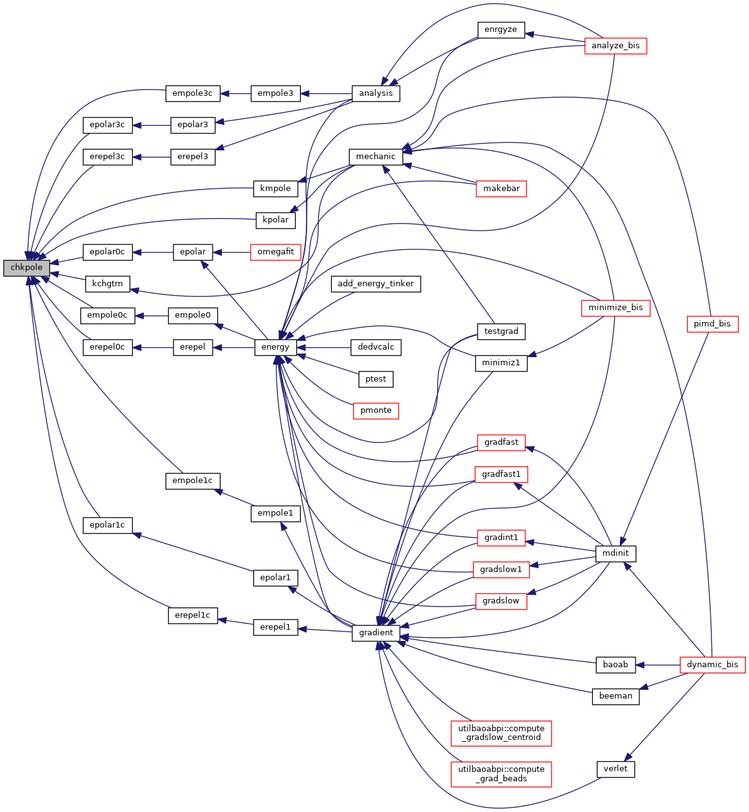

|
Tinker-HP v1.3
|
|
Tinker-HP v1.3
|
Go to the source code of this file.
Functions/Subroutines | |
| subroutine | chkpole (init) |
| inverts atomic multipole moments as necessary at sites with chiral local reference frame definitions More... | |
| subroutine chkpole | ( | logical, intent(in) | init | ) |
inverts atomic multipole moments as necessary at sites with chiral local reference frame definitions
| [in] | init,: | flag to know if first call to the subroutine |
Definition at line 21 of file chkpole.f90.
References colvarproxy_tinkerhp::init().
Referenced by empole0c(), empole1c(), empole3c(), epolar0c(), epolar1c(), epolar3c(), erepel0c(), erepel1c(), erepel3c(), kchgtrn(), kmpole(), and kpolar().

 1.8.5
1.8.5